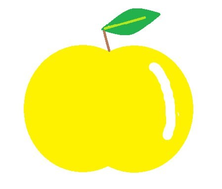

Зберігання та догляд за яблуками
Навчіться зберігати яблука правильно, щоб вони залишалися свіжими на довгий час. По-перше, важливо вибрати правильне місце для зберігання: яблука найкраще тримати в прохолодному, темному і сухому місці. Ідеальна температура для зберігання яблук становить близько 0-4°C. Якщо у вас є підвал або холодильник, це відмінний варіант. Також можна використовувати ящики з вентиляцією або решітки, щоб забезпечити належну циркуляцію повітря. Перед зберіганням яблука потрібно оглянути: видалити пошкоджені або гнилі плоди, оскільки вони можуть вплинути на якість інших яблук. Уникайте зберігання яблук разом з овочами, оскільки етилен, який виділяють деякі овочі, може прискорити псування фруктів. Якщо ви плануєте зберігати яблука тривалий час, їх можна також заморозити або зробити компоти та соки. Дотримуючись цих простих порад, ви зможете насолоджуватися свіжими яблуками протягом тривалого часу.
